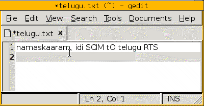

Telugu RTS with SCIM
I am happy to announce that an implementation of the Telugu RTS transliteration scheme is now available for SCIM! Special thanks to Mr. Naoto TAKAHASHI of m17n-lib, who kindly implemented its state machine.
Please try out this transliteration scheme (see instructions below) and notify me about any problems. Also, see this related article about the demonstration video above.
Features
In addition to the functionality expected from its elder sibling, Telugu RTS for IIIMF, this one features automatic sunna generation inside a word and, when possbile, at the end of a word.
Sunna generation inside a word
Usually you would type ‘gaaMdhi’ to generate ‘‡∞ó‡∞æ‡∞LJ∞߇∞ø’, but now you can type more naturally: both ‘gaandhi’ and ‘gaamdhi’ generate ‘‡∞ó‡∞æ‡∞LJ∞߇∞ø’.
Sunna generation at the end of a word
Instead of typing ‘chakraM’ to generate ‘‡∞ö‡∞ç‡∞∞‡∞Ç’, you can type more naturally: ‘chakram’ to generate the same thing.
Preventing sunna generation
As specified in the RTS, you can manually override this automatic sunna generation by typing an ampersand (&) after an ‘n’ or ‘m’ character.
For example, ‘vandE’ and ‘vamdE’ yield ‘‡∞µ‡∞LJ∞¶‡±á’, whereas ‘van&dE’ and ‘vam&dE’ yield ‘‡∞µ‡∞®‡±ç‡∞¶‡±á’. Similarly ‘padyam’ yields ‘‡∞™‡∞¶‡±ç‡∞؇∞Ç’, whereas ‘padyam&’ yields ‘‡∞™‡∞¶‡±ç‡∞؇∞Ƈ±ç’.
Note that sunna is not generated if a word ends with an ‘n’. So, ending a word with ‘n’ and ‘n&’ yields the same result.
Requirements
Get from m17n-lib:
- m17n-lib 1.3.1 or newer
- m17n-db 1.3.1 or newer
Get from SCIM:
- scim 1.0.2-3 or newer
- scim-m17n 1.0.2-3 or newer
- scim-gtk2-immodule 1.0.2-3 or newer
Installation
For the time being, download the state machine from here.
The m17n-lib developers are planning to create a m17n-contrib package in which they will accept user contributed state machines. I plan to submit this state machine, such that it will be included with the core m17n-lib distribution in the future.
As root, copy the
te-rts.mimfile into/usr/share/m17n/As yourself, kill any existing SCIM processes:
ps aux | grep scim | awk '{print $2}' | xargs killStart SCIM:
export XMODIFIERS='@im=SCIM' export GTK_IM_MODULE=scim export QT_IM_MODULE=scim scim -d &Launch any GTK2 program, such as
gedit, and press Control+Space.Choose “Telugu > M17N-te-rts” from the gtk2-immodule applet.
Start typing Telugu text using the RTS transliteration scheme!